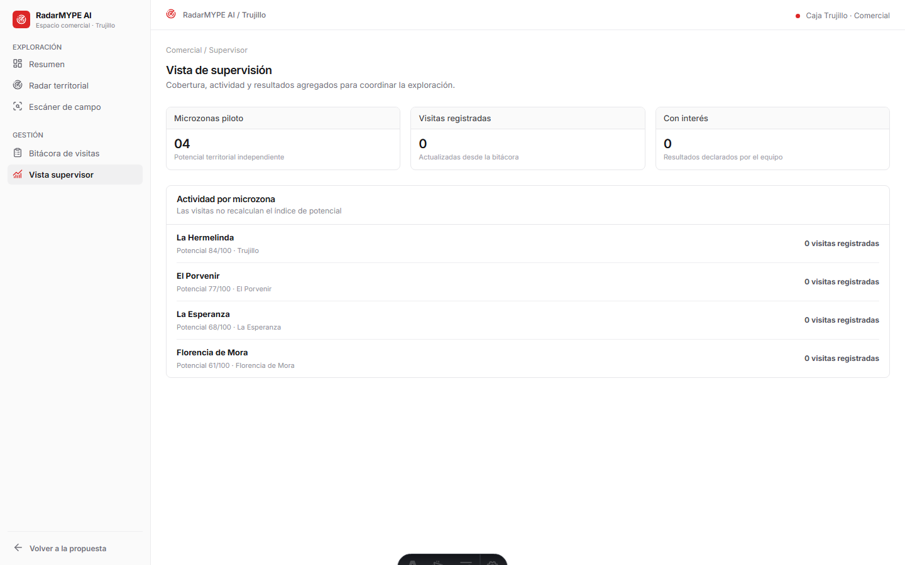
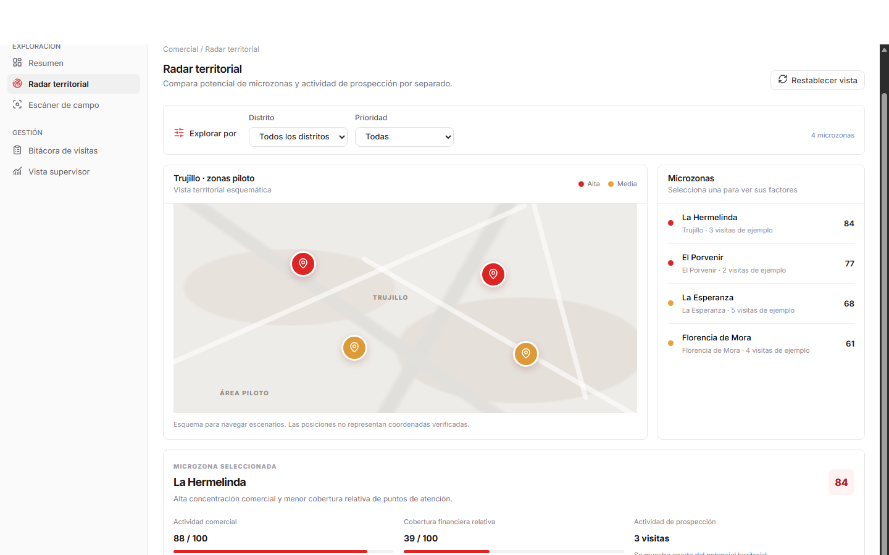
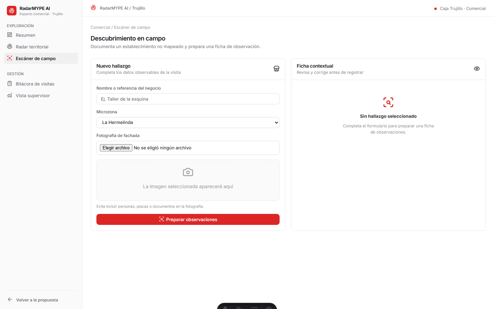

PROPUESTA DE SOLUCIÓN · COMERCIAL
Ver el territorio.
Descubrir oportunidades.
Inteligencia territorial y herramientas de campo para orientar la exploración comercial y aprender de cada visita.
EL PUNTO DE PARTIDA
La prospección depende de recorridos habituales, experiencia individual y datos dispersos. Esto dificulta decidir dónde explorar y compartir lo aprendido entre analistas y supervisores.
DESAFÍO
Identificar zonas o segmentos con potencial de inclusión financiera antes de organizar visitas y campañas.
RESPUESTA
Combinar evidencia territorial con hallazgos de campo para orientar al equipo, sin convertir una puntuación en certeza.
Qué propone RadarMYPE AI
Una experiencia conectada entre radar territorial, escáner de campo, copiloto comercial, bitácora y supervisión. Cada visita genera información útil para planificar la siguiente exploración.
Principio central
El potencial territorial, la actividad de prospección y los resultados comerciales se muestran por separado. La decisión de acercamiento permanece en manos del equipo.
ALCANCE RESPONSABLE
Explorar oportunidades territoriales no equivale a estimar solvencia, capacidad de pago, necesidad de crédito ni elegibilidad individual.
RECORRIDO OPERATIVO
El producto convierte señales territoriales en un flujo de trabajo revisable, desde la exploración hasta la coordinación del equipo.
El radar compara microzonas y muestra los factores que sustentan cada prioridad.
El analista documenta un establecimiento no mapeado y, si corresponde, adjunta una fotografía de fachada.
Una ficha editable reúne señales observables y preguntas para un abordaje comercial contextual.
La visita queda en la bitácora con su resultado declarado por el analista.
La vista agregada muestra cobertura y resultados por microzona sin alterar el potencial estructural.
Demostración navegable
El prototipo web permite completar este recorrido con escenarios y puntajes ilustrativos. El registro de visitas persiste en el navegador para mostrar cómo cambia la actividad del equipo. La lectura automática de imágenes y las integraciones de datos pertenecen al alcance de implementación del piloto.

La vista de supervisión resume visitas y resultados por microzona.
MOTOR EXPLICABLE
La prioridad de una microzona se construiría con variables observables, fecha de actualización y límites de cobertura documentados.

Vista actual del prototipo: mapa esquemático, filtros y factores de una microzona.
PRIORIDAD
Nivel de exploración para distribuir esfuerzo.
EVIDENCIA
Variables, fuentes y fecha que explican el resultado.
INCERTIDUMBRE
Datos faltantes o escala insuficiente para una lectura fina.
DESCUBRIMIENTO ASISTIDO
El analista registra el negocio, su microzona y señales visibles. En el piloto, una lectura multimodal podría proponer observaciones estructuradas que siempre se revisan antes de guardarse.

Vista actual del prototipo: captura de hallazgo y ficha contextual editable.
SEÑALES ADMISIBLES
Giro aparente, tipo de fachada y medios de pago visibles. El analista puede corregir o descartar cada observación.
COPILOTO COMERCIAL
Sugerencias ligadas al contexto y al catálogo validado, sin presumir una necesidad financiera.
Controles desde el diseño
FUENTES PARA EL PILOTO
La selección final dependerá de disponibilidad, licencia, escala geográfica y calidad. Ninguna fuente pública se ha conectado al prototipo actual.
Resultados de establecimientos urbanos y actividad económica para estudiar concentración comercial.
Resultados oficiales ↗Padrón reducido con estado, UBIGEO, domicilio fiscal y direcciones de locales anexos.
Campos y descarga ↗Acceso y uso financiero; la escala publicada de muchos indicadores llega a distrito.
Mapa de oportunidades ↗Capas y geometrías para armonizar límites territoriales y UBIGEO.
Infraestructura espacial ↗Puntos de atención, cobertura, visitas y resultados, sujetos a acceso acordado.
FUENTE INTERNA PROPUESTAREGLA DE INTEGRACIÓN
No convertir indicadores distritales en afirmaciones sobre una calle o un negocio. Cada salida debe mostrar escala, fecha, fuente e incertidumbre.
RUTA DE PILOTO
Primero se validan datos y uso con el equipo comercial. Después se implementan capacidades de campo y analítica con controles adecuados.
HOY · DEMOSTRACIÓN
Radar navegable, microzonas ilustrativas, hallazgo editable, bitácora persistente en navegador y vista de supervisión.
PROPUESTA · PILOTO
App móvil, PostgreSQL/PostGIS para datos geográficos, autenticación por roles y servicios multimodales para observaciones revisables.
Secuencia de trabajo
Confirmar acceso, licencia, columnas, fecha y granularidad de cada fuente.
Limpiar registros, armonizar UBIGEO y geometrías, y medir cobertura.
Definir microzonas, reglas, pesos y explicaciones con el equipo de Caja Trujillo.
Validar recorridos de campo, registros completos y utilidad de las prioridades.
Cómo medir el piloto